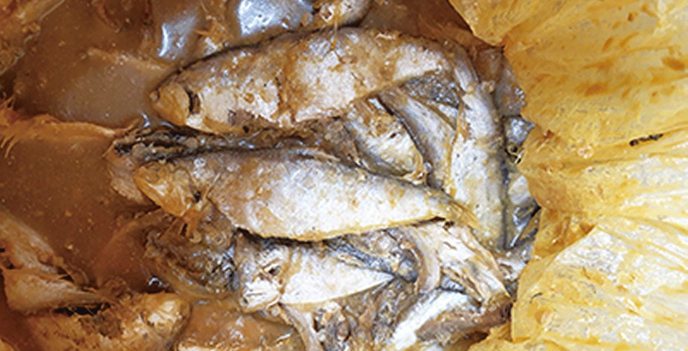

1. 통 바닥의 숫자
고향집에 들렀다가 밴댕이 젓갈을 한 통 얻어 왔다. 노란 비닐봉지를 겹겹이 묶어 담아 주셨는데 냉장고에 넣으려면 옮겨 담을 통이 필요했고.. 찬장에서 반찬통 몇 개를 꺼내 뒤집어 보니 바닥마다 화살표 삼각형 안에 숫자가 찍혀 있었다.

그 숫자는 재질 번호이며 1번 PET.. 2번 HDPE.. 3번 PVC.. 4번 LDPE.. 5번 PP.. 6번 PS.. 7번 그 밖의 재질로 나뉜다. 젓갈은 짜고 기름진 데다 오래 두고 먹는 음식이라서 이 조건을 버티는 쪽은 2번 HDPE와 5번 PP이고.. 3번 PVC와 6번 PS는 맞지 않는다. 흔히 쓰는 딱딱하고 투명한 반찬통이 대개 PS이므로 김치와 젓갈은 거기에 담지 않는 편이 좋다.
다이소의 진공 용기를 뒤집어 보면 1번 PET가 찍혀 있는데.. 속이 들여다보여야 하고 공기를 빼도 찌그러지지 않을 만큼 단단해야 하기 때문이다. 용기의 재질은 담을 음식보다 용기가 해야 할 일에 맞춰 정해진다.
그러면 5번 PP 통에 담으면 끝나는가 하면 그렇지도 않다. PP 통에 적힌 내열온도는.. 그 온도까지 모양이 변하지 않는다는 뜻이지 그 온도까지 아무것도 녹아 나오지 않는다는 뜻이 아니며.. 2020년 네이처 푸드에 실린 연구는 PP 젖병에 뜨거운 물을 부어 분유를 탈 때 미세플라스틱이 대량으로 나온다는 것을 보였다. 표시를 읽고 고르는 방식은 여기서 끝에 닿는다. 표시를 보지 않고 고를 수 있는 후보로는.. 세라믹과 유리가 남는데.. 세라믹은 겉에 바른 유약이 문제가 될 수 있어 식품용인지를 따로 확인해야 하므로 결국 유리가 남는다. 젓갈은 냉장고에 두는 음식이라 열을 견딜 필요까지는 없지만 뜨거운 음식까지 담는 범용 용기로 보면 끝까지 남는 것은 내열유리이고.. 그래서 젓갈은 유리병으로 옮겼다.
2. 캔 속의 코팅
음식을 보관하는 방법 중에는 알 만한 사람들은 알고 있는 캔 용기의 BPA-free 이슈가 있다. 이 이슈가 본격화되기 전.. 캔 음식들은 거의 대부분 캔 내부의 금속 표면에 에폭시 수지를 코팅제로 사용했는데.. 이 코팅의 원료가 비스페놀A이다. 고등어캔이나 꽁치캔을 따면 국물을 버려야 하느냐는 질문이 여기서 나온다.
이 질문에 대한 답은 나라마다 다르다. 유럽연합은 2023년 EFSA가 비스페놀A의 하루 허용량을 이전의 2만분의 1로 낮춘 뒤 2024년 12월 식품 접촉 재료에 비스페놀A 사용을 금지하는 규정을 채택했고.. 한국은 용출기준 0.6ppm을 두면서 사용 금지는 2018년에 영유아용 기구까지 넓힌 데서 멈춰 있다. 미국은 법으로 막지 않았지만 소비자의 기피가 시장을 움직이면서 제조사들이 스스로 코팅을 바꿨다.
국내 제품에서 BPA-free 표시를 찾아보면 동원 참치캔을 언급한 글만 보이고 고등어캔과 국내 스팸은 확인되지 않는다. 그리고 BPA-free가 플라스틱이 없다는 뜻도 아니다. 대체 코팅 역시 플라스틱이며 비스페놀A가 빠진 자리에 구조가 비슷한 BPS·BPF가 들어가는 경우가 있어서.. 이름 하나를 빼면 그 옆의 이름이 자리를 채우는 모양이 된다.
3. 종이의 방어막
종이는 사정이 나을 것 같지만 쓰임에 따라 갈린다. 우유팩은 종이 안쪽에 PE를 입혔는데 PE는 비교적 안정한 재질이라 걱정이 적은 반면.. 기름이 배지 않아야 하는 종이에서 문제가 생긴다. 햄버거 포장지는 기름을 막으려고 과불화화합물.. 곧 PFAS로 처리해 왔고.. 미국 FDA는 2024년 기름 방지용 PFAS가 들어간 식품 포장재가 더 이상 미국 시장에 공급되지 않는다고 발표했다.
포장지는.. 소비자가 고를 수 있는 몫이 없다는 점에서 통이나 캔과 다르다. 통을 바꾸고 캔 국물을 버리는 것까지는 개인이 할 수 있지만 햄버거는 이미 포장된 채 온장고에서 나오기 때문에 포장지는 받는 대로 받을 수밖에 없다.
PFAS의 힘은 탄소와 불소의 결합에서 나오는데.. 이 결합은 유기화학에서 가장 단단한 결합 가운데 하나이다. 그래서 기름도 물도 스며들지 못하고.. 같은 이유로 자연에서 분해되지도 않는다. 방어력과 분해되지 않음은 두 가지 성질이 아니라 한 결합의 두 얼굴이다.
4. 같은 모양의 반복
PP로 돌아가 보면 같은 모양이 보인다. PP는 가볍고 질기고 싸서 가장 많이 만들어지는데.. 햇빛을 받으면 잘 부서지고.. 부서진 뒤에도 사라지지 않은 채 점점 작은 조각이 되며 그 조각이 미세플라스틱이다. 분해되지 않고.. 햇빛에 잘 부서지고.. 생산량이 많다는 세 조건이 겹쳐 PP는 미세플라스틱의 주범이 된다.
불소는 너무 단단해서 사라지지 않고.. PP는 부서지되 사라지지 않으므로.. 두 경우 모두 쓸모를 만드는 성질이 그대로 문제를 만드는 성질이 된다. 잘 휘는 것은 잘 새어 나오고.. 잘 막는 것은 잘 남는데.. 한 구조의 양면이라서 좋은 쪽만 떼어 가질 수가 없다.
사라지지 않는 조각은 계속 쪼개진다. 미세플라스틱이 1마이크로미터보다 작게 쪼개지면 나노플라스틱이라 부르는데.. 흔히 쓰는 분석법은 몇 마이크로미터 아래의 입자를 잘 잡아내지 못해서 이 크기의 조각은 측정에서 빠지기 쉽다. 이것들이 인체에서 어떻게 작용하는지는 아직 연구가 진행 중인 영역이지만.. 혈액과 태반.. 혈관.. 뇌에서 검출되었다는 보고가 이어지고 있고.. 2025년 네이처 메디신에 실린 연구는 사망자의 뇌에서 나온 양이 2016년보다 2024년 시료에서 뚜렷하게 늘었다고 보고했다.
5. 소금
그러면 바다에 흘러든 조각은 어디로 가는가. 2018년 인천대학교와 그린피스가 21개국에서 팔리는 소금 39종을 조사했더니 36종에서 미세플라스틱이 나왔고.. 그중 가장 많이 나온 것이 바닷물을 말린 천일염이었다.
죽염은 소금을 대나무에 넣고 높은 온도로 굽기 때문에 그 온도에서 플라스틱은 타서 없어진다. 그러나 타고 나면 연소 부산물과 재가 남으며.. 죽염 특유의 냄새가 무언가 타고 남은 것이 있다는 증거이다.
땅에서 캐는 암염은 바다의 오늘을 겪지 않았고.. 분홍빛이나 붉은빛은 산화철의 색이다. 대신 광물이 함께 섞여 들어오는 문제가 있어서 호주에서 판매된 분홍 소금에서 납이 기준을 넘은 사례도 있었다.
남는 것은 정제염이다. 바닷물을 이온교환막으로 걸러 염화나트륨만 뽑아내므로 미세플라스틱도 광물도 걸러지는데.. 가장 깨끗한 이 소금이 오히려 가장 싸다. 천일염은 미네랄과 전통을 내세워 고급으로 팔리고.. 정제염은 공장 소금이라는 인상 때문에 값싼 소금으로 취급되며.. 대한민국에는 이 정제염 시장을 장악한 대기업이 있다.
조금만 생각해 보면 이상한 곳이 보인다. 천일염이 김장에 좋다는 이야기는 간수에 든 마그네슘이 배추를 단단하게 잡아 준다는 데서 나오는데.. 이 이야기에는 같은 천일염에 섞인 플라스틱이 빠져 있고.. 정제염에 가벼운 공정 처리만 더해도 마그네슘을 넣을 수 있다는 사실도 빠져 있다.
죽염도 사정이 같다. 죽염의 효능을 말하는 이야기에는 수많은 유사과학이 섞여 있는데.. 그 가운데 실제로 쓸모 있는 성분이 있다면 그 성분 역시 김장 소금의 마그네슘처럼 정제염에 더 안전하게 넣을 수 있다.
천일염과 죽염은 원료에 섞인 것을 그대로 안은 채 좋은 성분을 내세우는 반면.. 정제염은 섞인 것을 먼저 걷어 내고 필요한 성분을 골라 더할 수 있다. 나의 검토로는 정제염을 바탕으로 필요한 성분을 더한 변형 소금이 최적해이다.
6. 다시 젓갈
유리병으로 옮긴 젓갈을 냉장고에 넣고 나서 보니 통 바닥의 숫자에서 출발해 캔의 코팅과 포장지의 불소를 거쳐 소금까지 와 있었다.
가는 길마다 판정은 같은 방식으로 내려졌다. 표시와 효능의 이야기를 따라가면 끝이 나지 않지만.. 섞여 들어올 것이 없는 바탕을 먼저 고르고 필요한 것은 그 위에 더하면 끝이 나는데.. 용기에서는 그 바탕이 내열유리였고 소금에서는 정제염이었다.
쓸모를 만드는 성질과 문제를 만드는 성질은 끝내 떼어 낼 수 없었으므로.. 좋은 성질을 내세우는 이야기를 만나면 그 성질의 뒷면부터 물어야 한다. 잘 막는 것은 무엇을 남기는가.. 몸에 좋다는 성분 옆에는 무엇이 함께 들어 있는가.
그렇게 고른 유리병 안을 다시 들여다본다. 밴댕이 젓갈은 소금으로 절이고.. 젓갈에 쓰는 소금은 천일염이다.
출처
- Li et al. (2020), Microplastic release from the degradation of polypropylene feeding bottles during infant formula preparation, Nature Food
- EFSA (2023), Re-evaluation of the risks to public health related to the presence of bisphenol A (BPA) in foodstuffs
- Commission Regulation (EU) 2024/3190, Bisphenol A in food contact materials
- 영·유아용 기구 및 용기·포장에 비스페놀A 사용금지 확대 (2018)
- 대한민국 정책브리핑, 생활 속 유해물질 비스페놀A 안전할까요
- FDA (2024), PFAS used in grease-proofing agents for food packaging no longer being sold in the U.S.
- Kim et al. (2018), Global Pattern of Microplastics in Commercial Food-Grade Salts, Environmental Science & Technology
- Fayet-Moore et al. (2020), An Analysis of the Mineral Composition of Pink Salt Available in Australia, Foods
- Nihart et al. (2025), Bioaccumulation of microplastics in decedent human brains, Nature Medicine